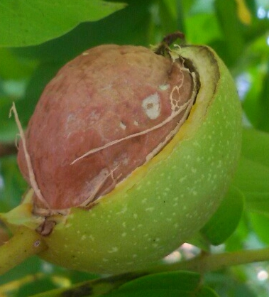

Walnusskerne
Die Echte Walnuss (Juglans regia) ist ein sommergrüner Laubbaum aus der Familie der Walnussgewächse (Juglandaceae). Der Walnussbaum wird 15 bis 25 m, in dichteren Baumbeständen auch bis 30 m hoch. Sein Höhenwachstum endet mit ca. 60 bis 80 Jahren. Er kann ein Alter von 150 bis 160 Jahren erreichen. Die Weltjahresproduktion an Walnüssen lag 2011 bei 3.423.447 Tonnen. Damit ist sie seit 1961 fast um das Siebenfache gestiegen. Die Hauptproduzenten waren China, Iran, USA, die Ukraine. Die Früchte reifen in unseren Breiten Ende September bis Anfang Oktober zu Walnüssen. In Kalifornien dauert die Ernte von Ende August bis November
Gesundheitlicher Nutzen
Je nachdem, ob frisch oder getrocknet, haben Walnusskerne einen Fettanteil von 42 bis 62,5 Prozent, 11 bis 16 Prozent Eiweiß, 15 bis 23 Prozent Kohlenhydrate. Walnüsse haben von allen Nussfrüchten mit 7490 mg/100 g den höchsten Gehalt an Linolensäure (einer für das Herz gesunden Omega-3-Fettsäure). Darüber hinaus sind sie reich an Tocopherolen, einer Gruppe von vier verschiedenen Vitamin-E-Formen. Dazu ist diese Frucht reich an Zink (ein wichtiges Spurenelement unter anderem für Leber und Haare) und Kalium (unter anderem für den Herzmuskel), außerdem enthält sie Magnesium, Phosphor, Schwefel, Eisen, Calcium und die Vitamine A, B1, B2, B3, C und Pantothensäure. Der Brennwert von 100 g verzehrbarem Anteil liegt bei 2738 kJ. Ein Vergleich der Brennwerte und Fettgehalte von Nüssen findet sich unter Nussfrüchte. In einer Untersuchung über Mittelmeerdiäten wurde festgestellt, dass die Nüsse eine vor Diabetes (Typ 2) schützende Wirkung besitzen. Auch zeigen neuere Untersuchungen, dass schon neun Walnüsse täglich und ein Teelöffel Walnussöl den Körper vor zu hohem Blutdruck in Stresssituationen schützen können. In Kombination mit Leinöl sollen sich Walnüsse zudem auch positiv auf den Zustand der Blutgefäße auswirken. Darüber hinaus scheinen Walnüsse nicht nur Herz-Kreislauferkrankungen entgegenzuwirken, sondern auch Prostatakrebs zu bremsen. Halbreife Nüsse und im Frühsommer geerntetes Laub enthalten bis zu 1 Prozent Vitamin C und gehören damit zu den Vitamin-C-reichsten Pflanzenteilen in Mitteleuropa. Schon seit der Antike fanden sie vielseitige medizinische Verwendung. Noch heute werden ihre Extrakte in der Naturheilkunde eingesetzt und sollen unter anderem bei Anämie, Diabetes mellitus, Durchfall, Darmparasiten, Frostbeulen, Hautgeschwüren und Wunden helfen. Ihnen wird eine antiseptische, wurmtreibende, tonische, blutreinigende und narbenbildende Wirkung nachgesagt.
Unser Sortiment und Klassifizierung
Extra licht Hälfte (sehr hell, beinahe weiß ) – (1/2) Licht Hälfte (hell aber bräunlich ) – (1/2) Licht Viertel – (1/4) Licht Achtel oder Bruch – (1/8) Licht Amber (hell bernsteinfarbig) – (1/2) Amber (bernsteinfarbig) (1/2 und MIX) verschiedene Fraktionen (80/20; 70/30; 65/35)
BIO Walnusskerne

Verpackung
20 Kilo Karton 5 oder 10 Kilo Vakuumverpackung